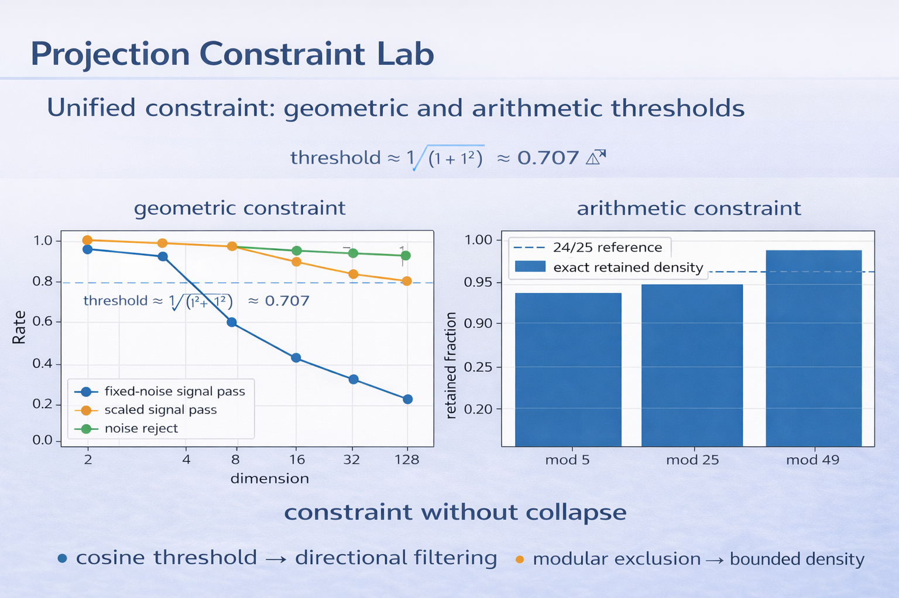
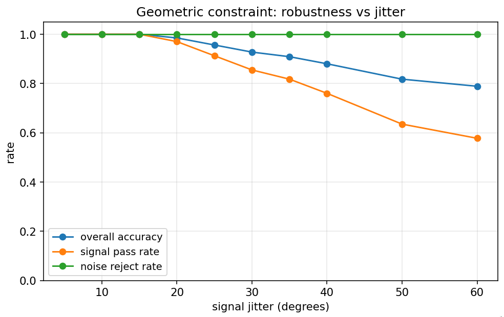
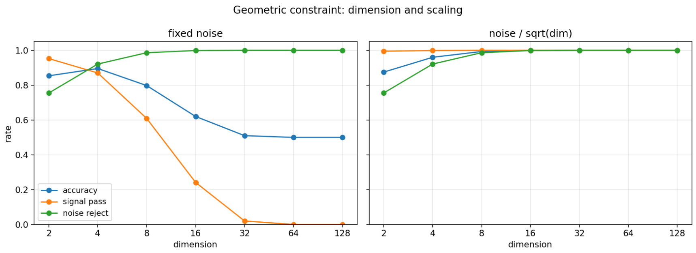
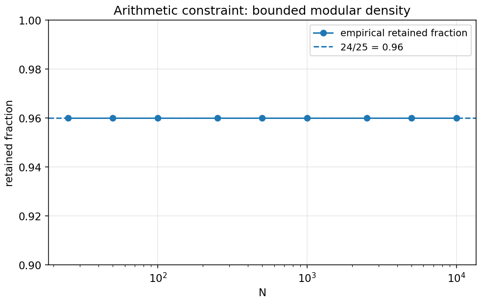
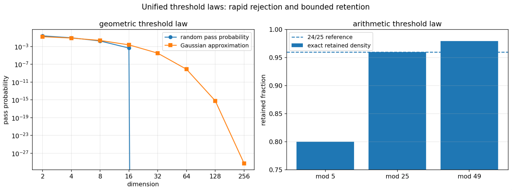

Constraints reduce a space without forcing collapse.
geometric cosine threshold → directional filtering
arithmetic modular exclusion → bounded density
In high dimension: random vectors become orthogonal, fixed thresholds become selective, and signal survives when scaled ~ 1/√d.
In arithmetic: bounded modular filters preserve exact density, while cumulative filters produce multiplicative decay.

Signal robustness under angular perturbation (cosine threshold ≈ 0.707).

Stability emerges when perturbations scale as 1/√dimension.

Example: mod 25 → exact retained density 24/25.

geometric rejection ↔ arithmetic retention